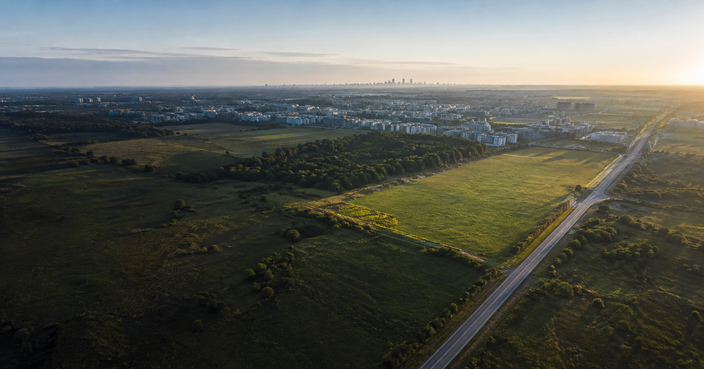
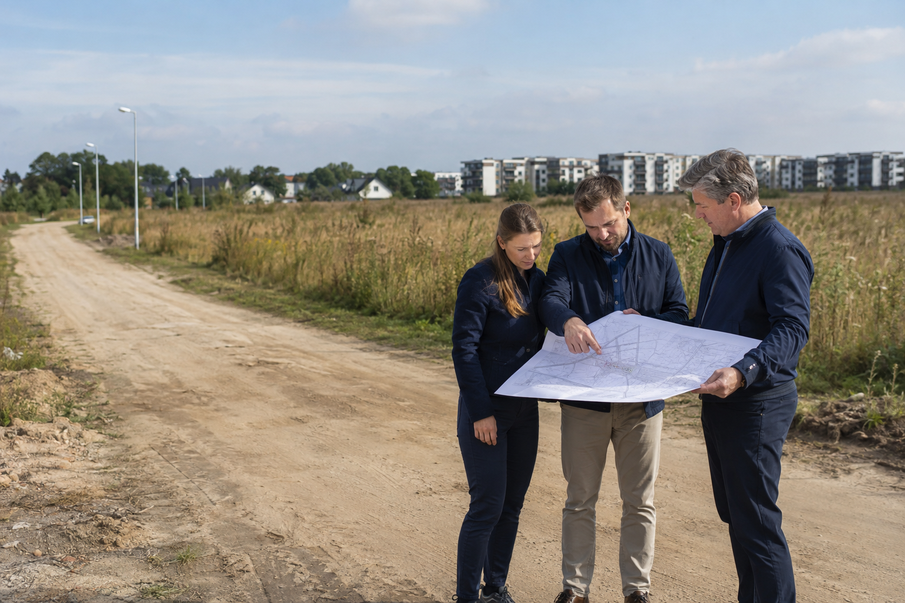
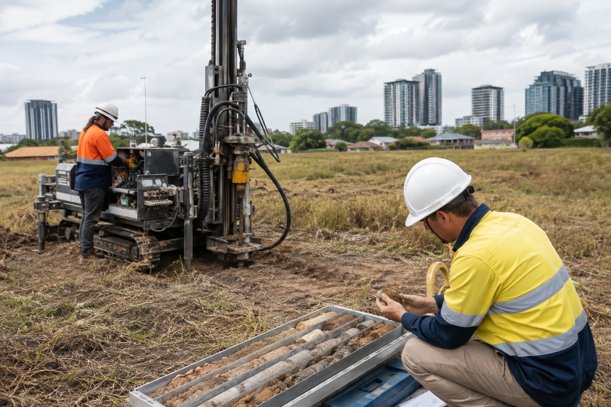

Potencjał zabudowy
Przeznaczenie, linie zabudowy, wysokość, intensywność, powierzchnia biologicznie czynna, parking i możliwa liczba metrów.

GRUNTY POD BUDOWĘ
Selekcja działki, analiza potencjału, koordynacja ekspertów i negocjacje — zanim zamrozisz kapitał.
CENA ZA METR TO DOPIERO POCZĄTEK
Plan lub warunki zabudowy to tylko jedna warstwa. Sprawdzamy stan prawny, dostęp do drogi, media, granice, podłoże, wodę, ograniczenia i koszty, które decydują o realnej wartości gruntu.
MNIEJ ZAŁOŻEŃ. WIĘCEJ DANYCH.
Przeznaczenie, linie zabudowy, wysokość, intensywność, powierzchnia biologicznie czynna, parking i możliwa liczba metrów.
Własność, obciążenia, służebności, roszczenia, hipoteki, zgodność danych oraz przebieg granic istotny dla projektu.
Prawny i faktyczny dojazd, parametry drogi, możliwość obsługi budowy oraz warunki przyłączenia mediów.
Nośność podłoża, poziom wód, nasypy, ryzyko powodziowe, grunty rolne lub leśne, ochrona przyrody i sąsiedztwo.
CO MOŻE CIĘ CZEKAĆ BEZ WERYFIKACJI
To tylko trzy przykłady spośród wielu zależności, które mogą zmienić wykonalność, koszt lub harmonogram projektu.
Działka przylega do wydzielonego pasa drogowego i wygląda na dobrze skomunikowaną.
Brakuje odpowiedniego tytułu prawnego, droga ma niewystarczające parametry albo nie zapewnia obsługi planowanej skali inwestycji.
Oceniono mapę i lokalizację, ale nie treść praw, stan drogi, geometrię wjazdu i wymagania projektu.
Sprawdzić dostęp prawny i faktyczny, księgi, zarządcę drogi oraz możliwość wykonania właściwego zjazdu.
Mapa pokazuje wodę, kanalizację i energię w ulicy obok działki.
Brakuje mocy lub przepustowości, trasa wymaga wejścia na cudzy grunt, a rozbudowa sieci przesuwa termin i budżet.
Obecność sieci potraktowano jak gwarancję warunków i kosztu przyłączenia.
Uzyskać informacje i warunki od gestorów, sprawdzić trasę, prawa do gruntu oraz warianty awaryjne przed zakupem.
Płaska, sucha działka wygląda na prostą do zabudowy, a dane archiwalne nie sygnalizują problemu.
Badania ujawniają słabe warstwy, niekontrolowane nasypy lub wysoki poziom wód, co zmienia fundamenty, odwodnienie i bilans robót ziemnych.
Budżet oparto na wyglądzie terenu i ogólnych mapach bez badań adekwatnych do planowanego obiektu.
Dobrać zakres badań geotechnicznych do projektu i porównać wyniki z założeniami konstrukcyjnymi przed finalną decyzją.
UPORZĄDKOWANY PROCES
Funkcja, skala, lokalizacja, budżet, harmonogram i oczekiwana stopa zwrotu.
Porównujemy oferty według kryteriów ważnych dla konkretnego zamierzenia.
Koordynujemy analizę prawną, planistyczną, techniczną, środowiskową i kosztową.
Pomagamy zabezpieczyć warunki, terminy i sposób dojścia do bezpiecznego zakupu.

Zdjęcie ilustracyjneDUE DILIGENCE PRZED DECYZJĄ
Łączymy analizę rynku i dokumentów z koordynacją architekta, prawnika, geodety, geotechnika oraz innych specjalistów potrzebnych dla konkretnego projektu.
Zakres analizy zależy od działki i planowanej inwestycji. Ustalenia wymagające uprawnień potwierdzają właściwi specjaliści i organy. Sprawdź informacje o księgach wieczystych.
OPINIE KLIENTÓW
Treści robocze — do potwierdzenia przed publikacją.
„Zamiast porównywać tylko cenę gruntu, zobaczyliśmy realną różnicę w potencjale zabudowy i kosztach przygotowania inwestycji.”
Paweł K. · inwestor
„Proces miał jasne etapy. Wiedzieliśmy, jakie dokumenty i ryzyka są sprawdzane przed przejściem do finalnych negocjacji.”
Anna M. · inwestorka

„Największą wartością było połączenie analizy formalnej z techniczną. Działka zaczęła być oceniana jak projekt, a nie ogłoszenie.”
Marek S. · deweloper

„Wcześnie poznaliśmy ograniczenia dotyczące drogi i mediów. Mogliśmy uwzględnić je w cenie oraz warunkach transakcji.”
Tomasz W. · przedsiębiorca
FAQ
Nie. Trzeba sprawdzić konkretne parametry zabudowy, ograniczenia, dostęp do drogi, media, stan prawny i warunki terenowe.
Między innymi przeznaczenie, linie zabudowy, intensywność, wysokość, powierzchnię biologicznie czynną, parking, geometrię dachów i ograniczenia szczególne.
Analizujemy możliwość i warunki uzyskania decyzji o warunkach zabudowy, ale jej wynik i parametry wymagają właściwego postępowania administracyjnego.
Nie zawsze. Weryfikujemy podstawę prawną, stan faktyczny, parametry drogi, możliwość zjazdu i przydatność dla planowanej inwestycji.
Tak. Sama sieć w pobliżu nie przesądza o warunkach, terminie ani koszcie przyłączenia, dlatego analizujemy dane i informacje gestorów.
Zakres zależy od obiektu i warunków. Pomagamy skoordynować właściwego specjalistę i zestawić wyniki z planowaną inwestycją.
Tak. Możemy rozpocząć od konkretnej nieruchomości i ustalić zakres due diligence adekwatny do projektu.
Tak. Wspieramy negocjacje i koordynujemy założenia zabezpieczające czas na kluczowe analizy oraz decyzje.
ZANIM KUPISZ
Wstępna rozmowa pomoże zdefiniować kryteria gruntu, najważniejsze ryzyka i właściwy zakres analizy.